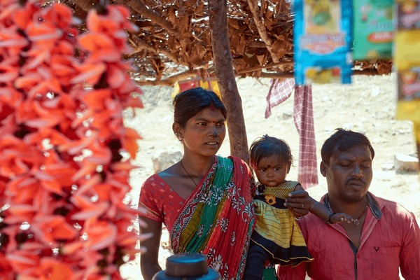

Study Overview
This research by Mouparna Dhar focuses on Baghmundi block, Puruliya. It evaluates how effectively national schemes like MGNREGA and PMAY-G are translated into tangible outcomes at the Gram Panchayat level.

Complete Academic Document
The full 60+ page dissertation including literature review, full methodology, and appendices is available for download.
Download Full PDF VersionKey Study Statistics
- Gram Panchayats 8
- District Puruliya
- Analysis Model IPA & Index
- Researcher Mouparna Dhar

Cultural Heritage of Baghmundi